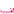
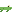
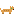
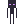

Your chat, in a biome.
Eight animated pixel worlds behind Claude Code, and a mob for every agent you send out.
/plugin install overworld --marketplace abdullahafaq/claude-overworld
Needs the desktop app Free and MIT licensed.

Biomes
Pick a biome and the whole app moves in.
Every biome is a moving scene plus a full colour palette. Switch, and the chat, the panels and the accent all follow. Try it on the hotbar below.

On it. I'll send a parrot to find where the header gets its styles, a fox to check the other pages, and a bee for the docs.
Sticky now, so it sits above the logo instead of on it. The creeper blew up on one old snapshot test, so I'm updating that next.
Sakura Night
Pink · dark. Cherry trees under a pink moon, lanterns and drifting petals.
/overworld sakura
The party
Every agent spawns as a mob.
When Claude sends out a subagent, it turns up in the Party pane as a pixel mob. You see what it's doing while it does it, and it heads back to spawn when it's done.
general-purpose
The fox. Does a bit of everything, digs through any file you point it at.
Explore
The parrot. Reads the whole codebase and repeats back the bits that matter.
Plan
The panda. Sits down, chews on it for a while, hands you a plan.
Review & security
The wolf. Sniffs out bugs and leaked keys. Hunts in packs.
Tests & builds
The creeper. Runs your tests. If they fail, it doesn't say failed. It says blew up.
Web & research
The bee. Flies off to the docs and comes back with what it found.
Your own custom agents get one of these spares, and the same one every time.

Axolotl
Frog
Cat
Enderman- Strider
Exact tokens
The real count, not a guess. The XP bar fills as it goes and tops out at 100k.
Live tool line
After the
↳, the tool it's using right now and what it's using it on. Tap+ trailfor its recent calls.A timer
Ticks once a second while something runs and the pane is open. Then it stops.
Secrets masked
Anything that looks like a key or token turns into •••. Plain text only, cut short.
Make it yours
Every mob is a text map.
One letter, one pixel. Change the letters and you've redrawn it. Or just ask Claude to.
hooks/mobs.tsfox: {
rows: [
'...........O.O..',
'..........OOOOO.',
'..........OEOOOO',
'WO........OOOWWK',
'WOO.OOOOOOOOWWW.',
'.OOOOOOOOOOOW...',
'..OOOOOOOOOOW...',
'..ooooooooooo...',
'...KK....KK.....',
'...KK....KK.....',
],
paint: { O: '#e3772c', o: '#bf5e20',
W: '#f5efe6', K: '#2a1e18',
E: '#1a1a1a' },
}- O fur
- o belly
- W white
- K legs
Things you can just say to Claude
- “make the Nether purple”
- “add a sheep to the Meadow”
- “give the panda sunglasses”
- “make me a biome for my home town”
Install
Spawn in with three commands.
Run these in the Code tab of the Claude Code desktop app. Needs the desktop app
-
Install the plugin
/plugin install overworld --marketplace abdullahafaq/claude-overworld -
Pick your spawn
/overworld sakura -
Look around
/overworldLists every biome. Then send an agent out and watch the Party pane.
All the commands
/overworld <biome>- Switch biome
/overworld random- Let the world pick
/overworld still- Stop the motion (
/overworld movingto bring it back) /overworld party off- Hide the Party pane (
onto respawn it) /overworld off- Back to plain Claude Code
Readable, calm, safe
Easy on the eyes, all day long.
I stare at this all day, so it has to be comfortable to read. A script checks every biome on every push.
- 13.3:1Main text contrast in the lowest biome. Most go higher.
- 6.4:1Softer text, lowest biome. Comfortably past AA.
- 1.4sThe fastest anything cycles. Nothing flashes.
- 3Settings saved: your biome, motion on or off, and whether you hid the pane.
Reduce motion
If your system asks for less motion, every scene holds still. Or type
/overworld still.Pure SVG
Each scene is 12 to 21 KB of vector, with nothing loaded from outside.
No access
No network, no files, no processes. It draws pictures and counts tokens.
Cheap to run
The pane batches updates and only redraws while agents are working.
FAQ
Questions, answered.
Does it work in the terminal?
No. Backdrops need the Claude Code desktop app, in the Code tab. The terminal doesn't draw them.
Will it slow my laptop down?
It shouldn't. The scenes are small SVGs with slow CSS motion, and the pane only redraws while agents are working. If you want it fully idle, /overworld still stops the motion.
Can I make my own biome?
Yes. A biome is one entry in biomes.ts, one palette in palettes.ts and one scene file. Easiest way: ask Claude to make one with you. The audit script will tell you if the colours are hard to read.
Is it safe?
It has no network, file or process access. It saves three settings and that's it. Anything that looks like a secret is masked before it reaches the pane. The code is all on GitHub if you want to check.
Is this official?
No. It's an unofficial fan project, inspired by Minecraft. It isn't made by or affiliated with Mojang, Microsoft or Anthropic.
Can I turn it off?
/overworld off and you're back to plain Claude Code. No creepers were harmed.